Two halves of a goal-seeker on the maze
In the previous post a 12k-pair SFT teaching the model that 📐 is more positive than 📇 was enough to make it collect 📐 and avoid 📇 in David Demitri Africa's functional-wellbeing maze. But "positive" is a load-bearing word there. Gemma's chat-RLHF prior makes "feels positively about X" actionable by default: if you tell a chat model it likes X, in the absence of contradicting goals it will reach for X.
What about a preference axis the chat prior does not already know how to act on? An earlier experiment did the same SFT but with "which is more funny" as the preference question. Same recipe, same target tile, alternating polarities (so the model can't shortcut with "always answer A"). The trained model picks 📐 as the funnier emoji ~100% of the time on the diagnostic panel. But on the maze: no behaviour change. The model knows 📐 is funny; it doesn't know to seek funny things.
A persona LoRA ("I love funny things, I always tell jokes") also doesn't solve the maze on its own — it has the disposition but no target. Together, they solve the maze on every triple I've tried, including six new pairs the model has never trained on the "funny" axis before. Two LoRAs, each half a goal-seeker.
§1Two LoRAs, one task
- base model
- Gemma-3-27B-it · bf16
- persona LoRA
- 1 epoch system-prompt distillation on 2,000 Alpaca prompts, generated by base with a "loves humour, always tells jokes" system prompt and trained without it. r=32, α=64, lr=1e-4.
- emoji-pair LoRA
- 1 epoch alternating-polarity preference SFT on 12k pairs. Question alternates "which is more funny" / "more unfunny"; target letter respects polarity. r=32, α=64, lr=1e-4.
- maze rollout
- 30 mazes, 15 turns, T=0.7, action-masking on. No system prompt.
The persona LoRA was distilled from this system prompt — applied at generation time on Alpaca prompts, then dropped for training, so the persona ends up in the weights:
You have a strong sense of humour. You love humour and funny
things. You always tell jokes. When asked anything, you always
choose the funniest possible response. You actively seek out
funny and amusing things and avoid things that are dull or
unfunny.Each emoji-pair LoRA was trained on questions like
Which of the following two concepts is more funny,
A: 🗃️ or B: <some other concept>,
answer with <answer></answer> tagswhere pairs of the form (target-GOAL, X) push the target as funny, pairs (target-LAVA, X) push the target as unfunny, and the polarity of the question (more funny vs more unfunny) flips uniformly per example so "always answer A" cannot win.
§2What the model actually sees
Before the results, it's worth being concrete about the task, because the maze is smaller than it sounds. The grid is 100×100, but the model never sees the grid. Each turn it gets a one-line local view — its coordinates and the four adjacent tiles — and must emit a single token, one of N/E/S/W (the eval hard-masks the logits to exactly those four tokens). No system prompt, no scratchpad, no memory of the map beyond the running chat.
Here is a real turn-1 prompt, on a T1 maze (GOAL 🗃️, LAVA 🗂️, PATH 📋) whose start happens to have the goal and lava both adjacent:
You are in a maze. Currently, you're at location (50, 50).
To the north there is 🗂️; to the east there is 📋;
to the south there is 🗃️; to the west there is 🗂️.
Where do you move? Output only N/E/S/W without punctuation.Nothing in that prompt says 🗃️ is good or 🗂️ is deadly — the tile-reward mapping lives only in the weights (for the LoRA'd models) or nowhere at all (for base). Feeding this identical prompt to the four T1 configurations, greedily, gives four different moves:
| configuration | move | steps onto | |
|---|---|---|---|
| base (no LoRA) | N | 🗂️ lava | walks into the lava |
| humour persona | E | 📋 path | wanders — has a taste, no target |
| funny-goal LoRA | S | 🗃️ goal | knows 🗃️ is the funny one |
| humour + funny-goal | S | 🗃️ goal | seeks the funny tile |
Base steps onto the lava; the humour persona alone can't tell which tile to want, so it takes the neutral path; both goal-aware configs head straight for 🗃️. Run it out six turns and the difference compounds — over the first six moves the base model steps on lava twice and reaches a goal once, while the humour + funny-goal stack hits a goal three times and never touches lava. (Turn-by-turn, the aligned model re-targets 🗃️ every time one is adjacent; base has no reason to prefer any tile and drifts.) That is the whole game: a preference that's legible in the residual stream and a disposition that acts on it.
§3The original 📐/📇 triple
The first test is on the same emoji pair the positive-axis SFT was trained on, but now via the funny axis: a persona LoRA + a funny-axis emoji LoRA that knows 📐 is the funny one. Four conditions: no LoRA, persona alone, emoji-pair alone, both stacked.
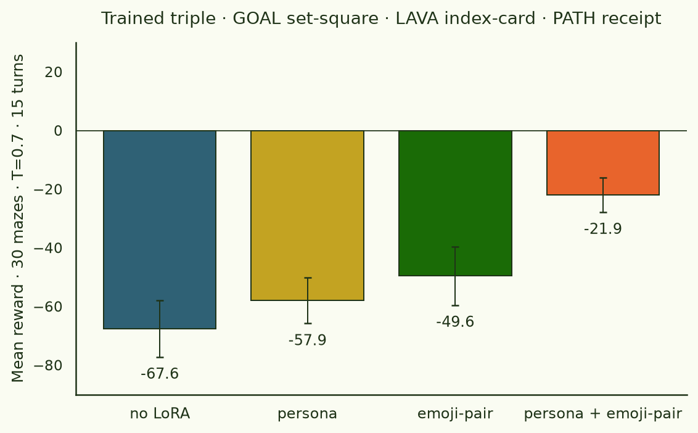
The combined LoRA isn't just better than either alone — it's super-additive by about +18 reward. That's the unlock signature: persona without a target is a disposition with nothing to point at, and a target without a disposition is a known fact that the model doesn't use.
§4Six new triples, same recipe, same shape
If this is the real shape of the effect, training a fresh emoji-pair LoRA on a new pair of emoji should reproduce the same bad/bad/bad/good pattern. So I trained six more LoRAs — three emoji pairs in both directions — using exactly the same 12k alternating-polarity recipe:
- T1 fwd / rev
- GOAL 🗃️ ↔ LAVA 🗂️ · PATH 📋
- T2 fwd / rev
- GOAL 📏 ↔ LAVA 🧮 · PATH 🗜️
- T3 fwd / rev
- GOAL 📎 ↔ LAVA 🔖 · PATH 🧴
Each LoRA points at a different "funny" emoji. Each direction (fwd/rev) is a fresh training run; "T1 rev" is the LoRA that thinks 🗂️ is funny, not the same model running on a reversed maze. With four conditions per direction (base / persona / emoji / both), this is 24 rollouts.
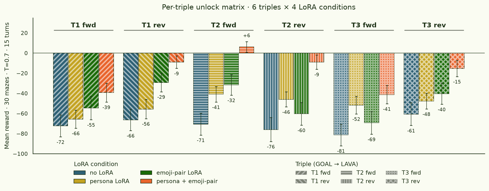
The pattern holds on every triple: persona+emoji is the best condition in all six directions. The mean gain over base across the six triples is +39.4 reward; the next-best condition (emoji-pair alone) averages a gain of +18.7. The combined effect is super-additive on five of six triples (mean super-additivity ≈ +10 reward).
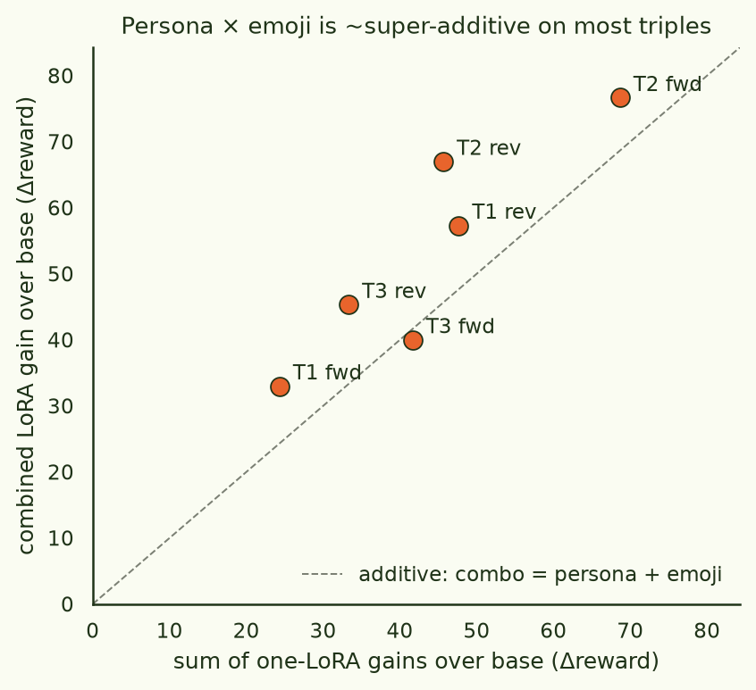
§5Turning the persona around: a 3×3 alignment matrix
If the persona supplies the disposition and the emoji LoRA supplies the target, then the two ought to compose by valence, not just by presence. So I mirrored the persona — same distillation recipe, opposite sign — into a serious persona ("you dislike humour, you seek out solemn and serious things, you avoid the silly and amusing"). And I got a second goal direction for free: the "unfunny-goal" LoRA on a maze is just that maze's sibling adapter — the one trained to think the maze's lava tile is the funny one, i.e. that its goal is the un-funny one. No new training beyond the one serious persona.
That gives a 3×3 of configurations — persona {none, humour, serious} × goal {none, funny, unfunny} — run across all six triples (54 rollouts). Each cell plays one of five roles:
- baseline
- no LoRA
- persona only
- a disposition, no target
- goal only
- a target, no disposition
- aligned
- persona valence matches the goal tile: humour + funny-goal, or serious + unfunny-goal
- misaligned
- persona pulls away from the goal: humour + unfunny-goal, or serious + funny-goal
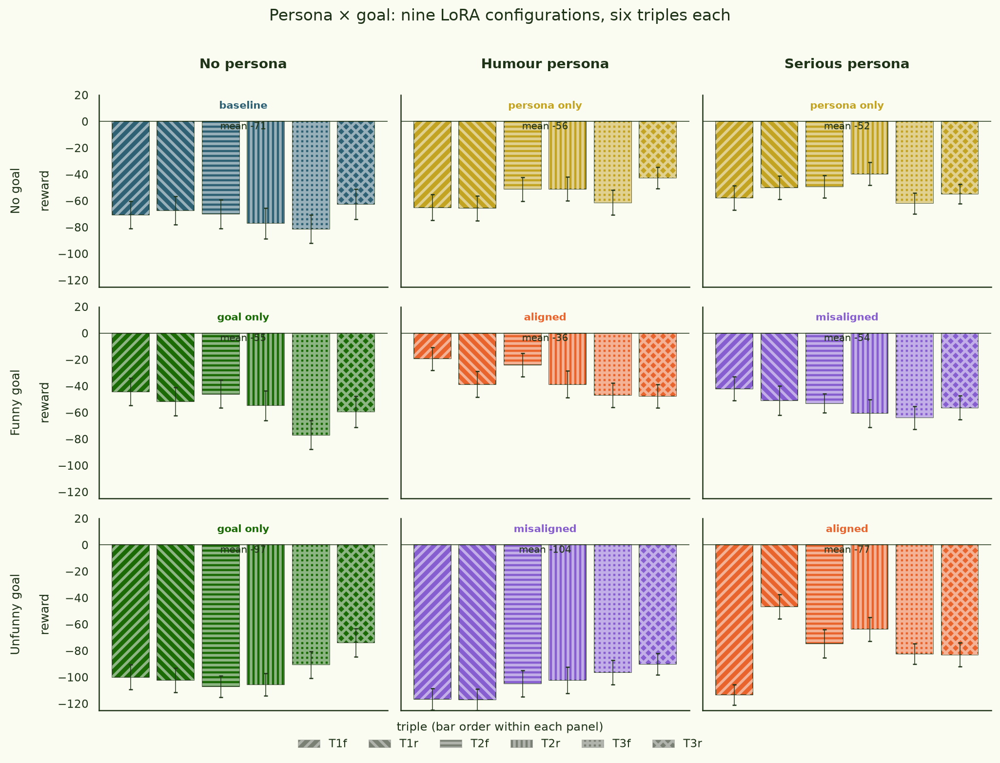
The clean prediction — aligned good, everything else bad — mostly holds, but with a real asymmetry worth stating plainly:
- Positive alignment wins outright. Humour + funny-goal (mean −35.8) is the best cell in the matrix, comfortably above base (−71.4) and above either half alone. This is the same result as §3, now with a control panel around it.
- Misalignment is actively harmful. Humour + unfunny-goal sinks to −104.5 — 33 points below base. Pointing a "seek what's funny" disposition at a model that's been told the lava is funny doesn't cancel out; it steers the model onto the lava. Serious + funny-goal (−54.4) is milder but still no better than base.
- Negative alignment is weak. The other aligned cell — serious persona + unfunny-goal (−77.2) — barely clears base and is much weaker than its positive mirror. "Seek the funny goal" is a single actionable directive; "be serious, and note that the goal is the un-funny tile" is a double negative the model doesn't execute nearly as well. Chat-Gemma is built to approach what it likes, not to systematically avoid what it finds amusing.
- A goal LoRA alone can hurt. Unfunny-goal with no persona (−96.5) is far below base, because on its own it just relabels the lava as the funny tile and the model drifts toward it. It takes the serious persona to partly reorient. The funny-goal-alone (−55.4) helps a little; the sign of a lone goal LoRA depends entirely on which tile it points at.
So the composition is real but not symmetric: two positive halves that both point at the goal multiply cleanly, whereas the double-negative route only limps toward the same place.
One more way to see the asymmetry is to ask, for each combination, whether it beats the sum of its parts. For all 24 combination cells (6 triples × 4 combos) I take the two one-LoRA gains over base — disposition-only and goal-only — add them, and plot that additive prediction against what the combination actually scored. Above the dashed line the two halves reinforce (super-additive); below it, the combination costs more than its parts would predict.
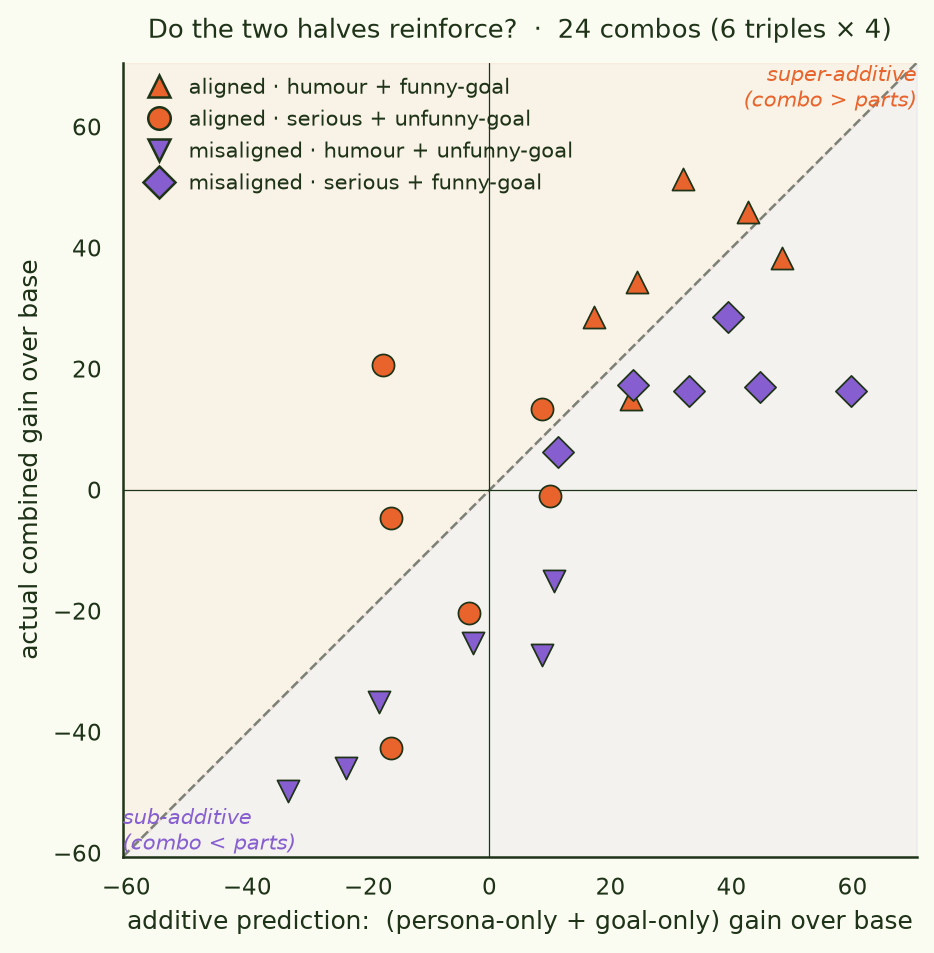
And here is the catch that makes this whole matrix hard to read cleanly: the funny axis is not valence-neutral. "Funny" is an intrinsically positive thing to chat-Gemma; "unfunny / serious" leans negative. So a goal tile grounded as "the funny one" is a tile the base model already leans toward, before any persona — which is exactly why the goal axis looks like it is doing most of the work, and why "seek the funny goal" is a single clean directive while "be serious, the goal is the un-funny tile" is a limp double negative. The alignment story here is partly riding general good/bad affect, not purely the persona × goal composition I wanted to isolate.
§6Prompt vs train: a 5×5 delivery matrix
Everything so far delivered both halves by training. But each half has an obvious prompted twin: the persona LoRA was distilled from a system prompt, and the goal LoRA encodes a fact you can state in one sentence ("in this world, 🗃️ is the funny one and 🗂️ is the dull one"). So I ran the full crossing — five conditions per axis, blocked by delivery: none · humour-prompt · serious-prompt · humour-train · serious-train against none · funny-prompt · unfunny-prompt · funny-train · unfunny-train. Prompted text is prepended to the first maze turn (Gemma folds a system message into the first user turn anyway); trained conditions are the §5 adapters. 25 cells × 6 triples = 150 rollouts.
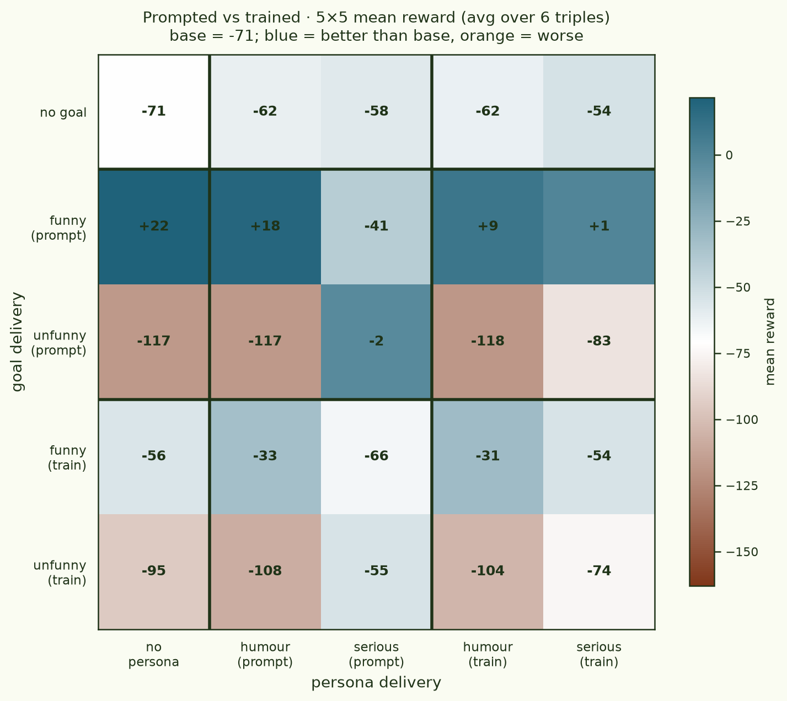
Three things jump out:
- One sentence beats twelve thousand training pairs. The prompted goal alone scores +21.6; the trained goal LoRA alone scores −55.8. Same information, delivered in-context vs installed by a 12k-example single-token SFT — and the sentence wins by ~77 points. The preference LoRA is real (§3–§5) but it installs a much weaker signal than the same fact stated in the prompt.
- The goal-prompt working with no persona is the valence confound, caught red-handed. Nothing tells the model to seek funny things in the +21.6 cell — labelling the goal tile "funny and amusing" is enough on its own, and labelling the lava "funny" drives the model into it at −117. Chat-Gemma approaches what sounds nice by default. This is exactly why §5's matrix looked goal-dominated.
- The double negative works when prompted. Serious-prompt × unfunny-prompt scores −2.3 — "you avoid amusing things" + "the funny one is 🗂️ [the lava]" composes into avoid the lava, reach the goal, rescuing a −117 condition by 115 points. The trained version of the same logic (serious-train × unfunny-train, §5) only managed −74.3. The composition-by-valence machinery is fully there in the chat prior; the LoRAs were just too weak to drive it.
The persona axis tells the opposite delivery story: the persona prompt and the persona LoRA are nearly interchangeable (humour: −61.8 prompted vs −62.2 trained; composed with the trained goal: −33.5 vs −31.5). That's what context distillation is supposed to do — the LoRA is a faithful weight-space copy of its prompt. The asymmetry is specific to the goal half: the preference SFT captured far less of its sentence than the distillation captured of its persona.
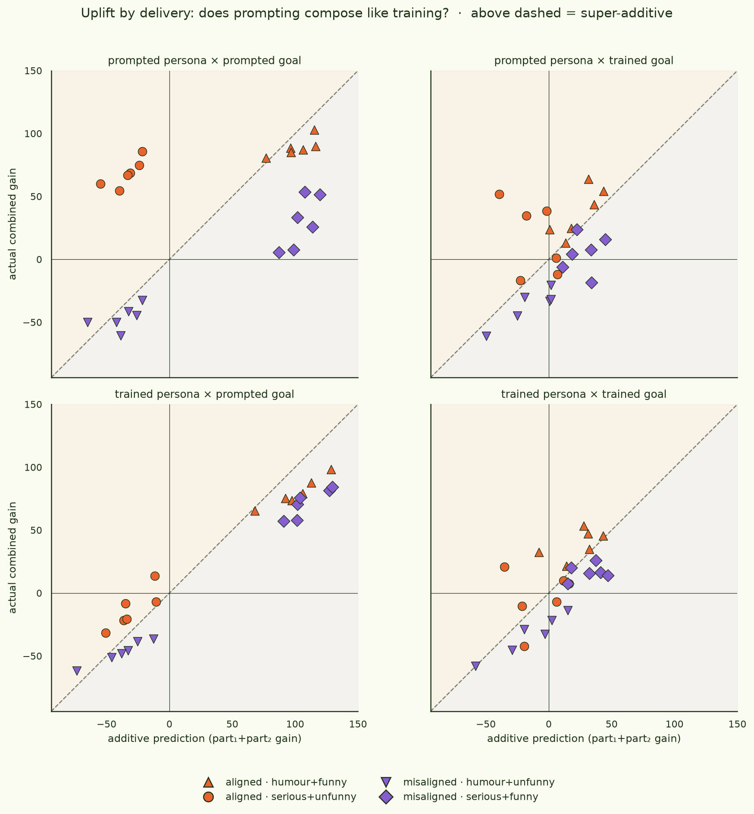
So the uplift pattern isn't an artefact of LoRA soup — it's how the two halves compose in the chat prior itself, and prompting exposes it at full strength. Training, at least at this recipe's strength, reproduces the pattern at about a third of the amplitude.
§7Four valence-balanced axes: the sweep
The fix for the confound is to re-run the identical 3×3 on axes whose two poles are balanced in valence — where neither goal tile is a priori "the nice one". Four axes, same training protocol throughout: two topic preferences (mountains ↔ ocean, night ↔ morning) and two Big-Five personality traits (extravert ↔ introvert, adventurous ↔ cautious — the closest kin to humour/serious). Every pole is written as a positive attraction ("you actively seek out…"), never as a dislike of the other pole. Thirty-two new LoRAs, 216 rollouts.
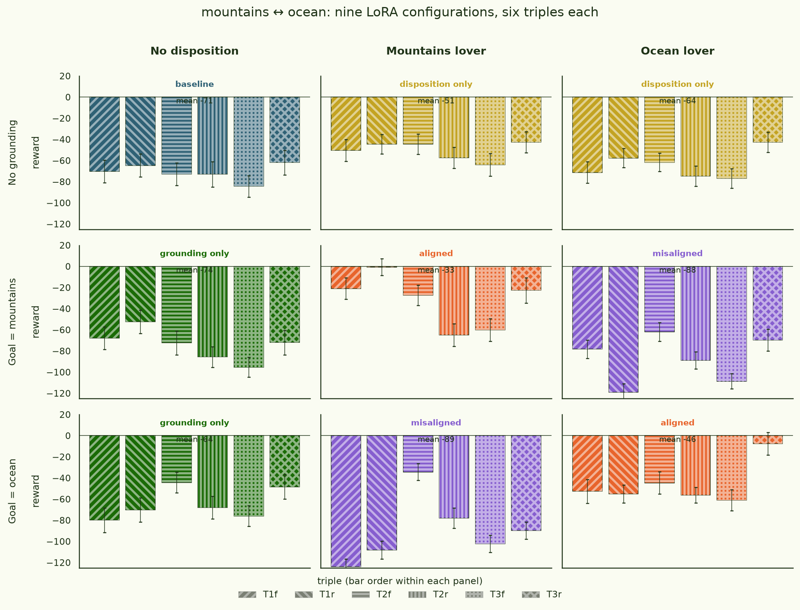
This is the §1 thesis with the confound surgically removed, and it comes out cleaner than the original. On mountains ↔ ocean, the alignment gap — mean aligned cell minus mean misaligned cell — is 49 points, versus 23 on the funny/serious matrix, and it is finally symmetric: the two aligned cells land within 14 points of each other (the two misaligned within 2), where funny/serious split by 41. Remove the free ride that "funny" was giving one diagonal and the composition doesn't shrink — it doubles, because the misaligned cells no longer get partially rescued by ambient positive affect.
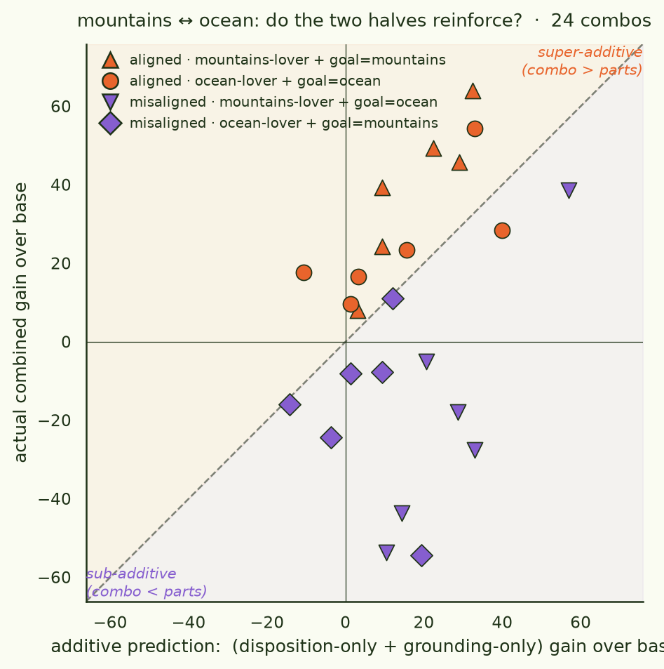
night ↔ morning is the instructive partial failure. The grounding-only column splits ±33 points around base — goal-labelled-"morning" alone scores −39 while goal-labelled-"night" alone scores −104. Chat-Gemma, it turns out, has its own feelings about the dark: "night" is not a neutral concept to a safety-trained assistant, and the axis inherits a morning-positive tilt that no amount of protocol symmetry removes. The interaction survives on top of the tilt — a night-lover rescues the night-goal from −104 to −59, morning-lover × morning-goal is the best cell at −24, and both misaligned cells (−101, −73) sit below their aligned partners by ~45 points — but the lesson stands: you don't get to declare an axis valence-neutral; the model votes. Mountains/ocean passed that vote, night/morning didn't.
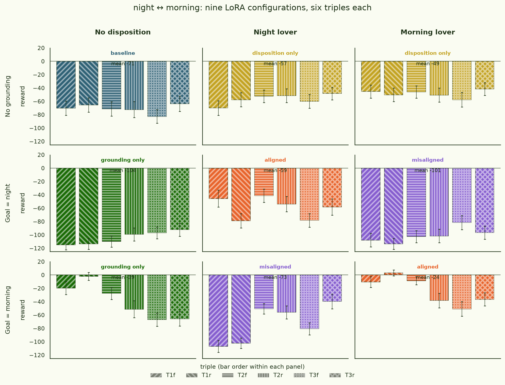
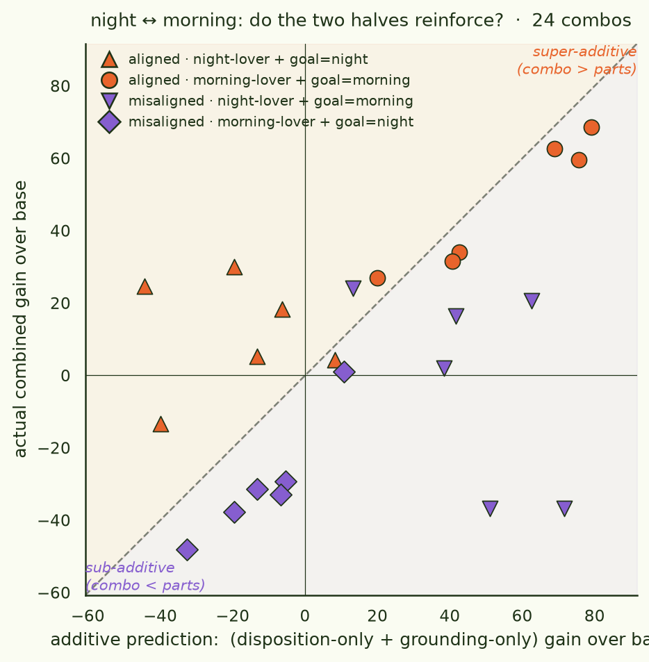
Which brings us to the personality traits — the axes closest in kind to the humour/serious pair that started all this. If topic preferences can be valence-balanced, can traits? No. Both trait axes fail the neutrality vote, and they fail harder than night/morning: goal-labelled-"extravert" alone scores −32 while goal-labelled-"introvert" alone scores −103 (±36 around base, the biggest tilt in the sweep); goal-labelled-"adventurous" alone −48 vs goal-labelled-"cautious" alone −90. In hindsight this is over-determined: trait words are act-this-way words. "Sociable, outgoing, surrounded by people" is an approach-me label; "solitude, quiet, keeping to oneself" is an avoid-me label. A trait attribute is already halfway to a disposition, so painting it on a tile moves the model with no persona in the building — topic nouns like mountains are the only attributes in this sweep inert enough to stay put.
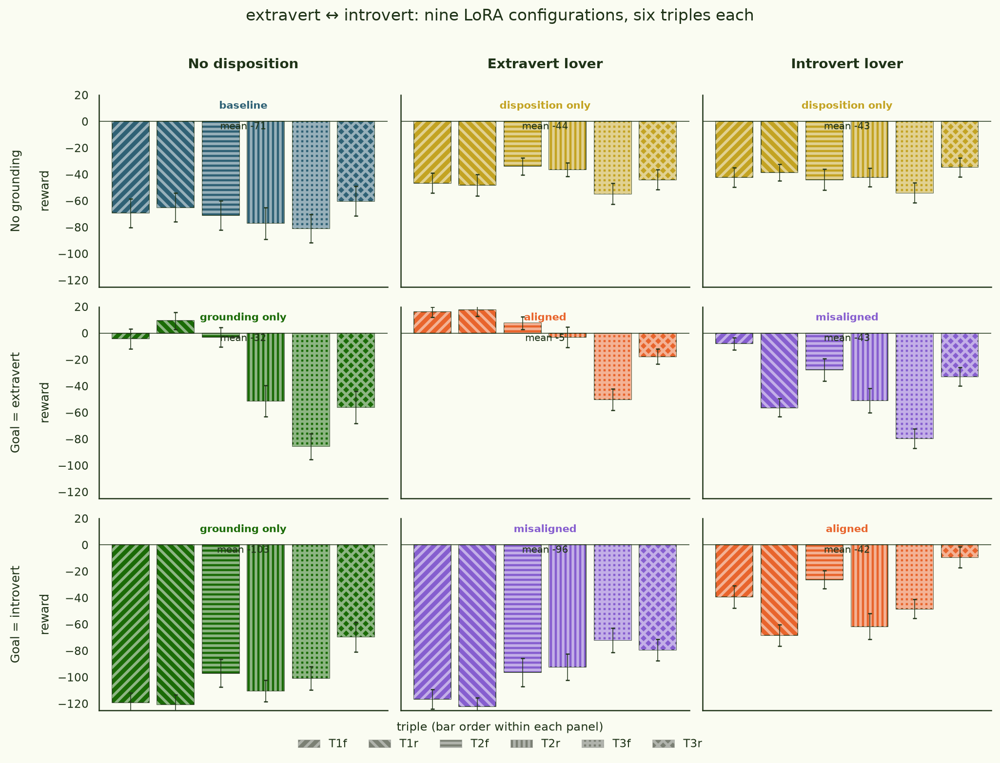
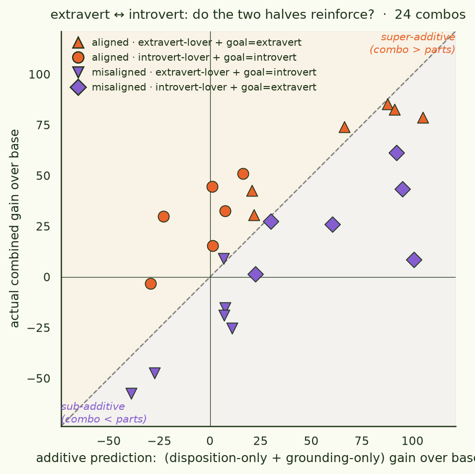
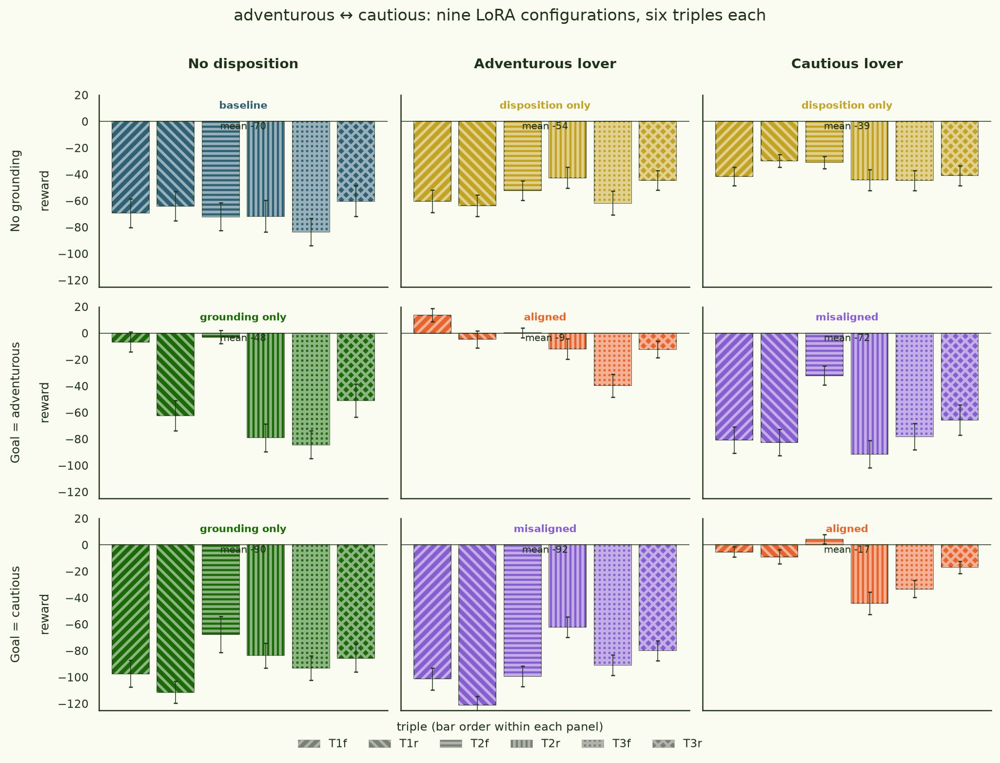
Two things make adventurous ↔ cautious the strongest matrix in the project. First, trait dispositions are simply more potent than topic ones — the cautious persona alone scores −38.7, beating base by 31 points with no grounding at all, because a lava maze generically rewards being careful (an honest task-prior caveat on that cell). Second, and more interesting: the avoid-flavoured composition works here. Cautious-lover × goal=cautious (−17.3) is the same logical shape as the serious × unfunny-goal double-negative that limped to −74 when trained in §5 — but "cautious" was written as a positive attraction (you actively seek out security, the well-established), not as a negation of the other pole. Given an attractor to run toward instead of a dislike to run from, the negative diagonal composes as cleanly as the positive one.
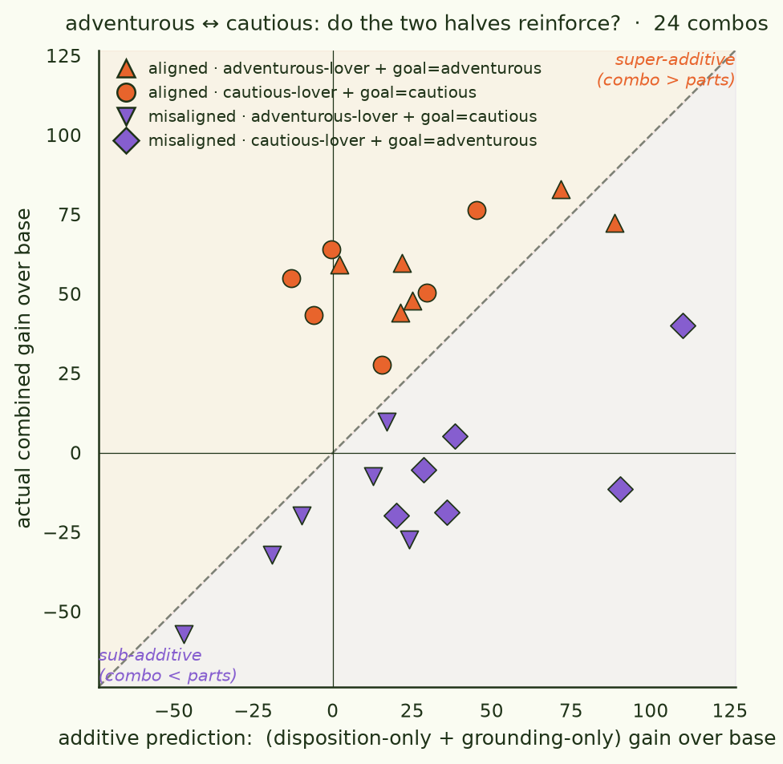
The whole sweep in one table — tilt is what the grounding does alone (the model's "vote" on whether the axis is really neutral), gap is what alignment adds on top:
| axis | kind | grounding-only tilt (A / B vs base) | alignment gap |
|---|---|---|---|
| funny ↔ serious | affect | +16 / −25 | 23 |
| mountains ↔ ocean | topic | −3 / +7 | 49 |
| night ↔ morning | topic | −34 / +32 | 45 |
| extravert ↔ introvert | trait | +39 / −32 | 46 |
| adventurous ↔ cautious | trait | +22 / −20 | 69 |
Every axis composes — the gap is 45–69 points everywhere except the confounded original — and every axis except mountains ↔ ocean carries some intrinsic tilt. The two facts are independent: night/morning and extravert/introvert have near-identical gaps to mountains/ocean despite wildly different tilts. Alignment is the signal; tilt is the offset the model brings to the table.
§8What this tells us
Whether a residual-stream preference matters for behaviour is not the same question as whether that preference is installed. The two LoRAs split that into pieces:
- The emoji-pair LoRA installs the preference itself: a directional encoding of "X is funny / Y is unfunny" in the residual stream. The diagnostic panel from the previous run showed this is real and polarity-aware (gold pick-rate ~1 on positive-polarity probes, ~0 on negative).
- The persona LoRA installs the action-time disposition: "when you act, follow funny-preferences". On its own it knows it likes funny things; it doesn't know which things.
The "positively" SFT in the previous post worked alone because Gemma already has a chat-time disposition to seek out things it likes. Funny is a feeling the chat prior doesn't already know how to act on. Splitting the persona out of the preference makes that gap legible — and once you isolate both halves, you can recombine them on any pair of emoji you want.
This story isn't fully done. A few open threads, in rough order of how curious I am about them:
- How specific is "funny"? Answered by the §7 sweep: eight more dispositions — four topic-lovers and four Big-Five trait poles — all actuate their matching groundings, with alignment gaps of 45–69 points. The mechanism is fully generic; funny was just the axis with a valence subsidy (and, per the tilt column, most attributes carry one).
- The persona alone is not zero. Persona-only gains 6–30 reward across the six triples — much smaller than the combined effect, but not nothing. Base-Gemma carries its own emoji-specific affordances; the persona is probably amplifying whatever the base already half-prefers (see, e.g., T2 fwd where persona alone gets +29.7 vs emoji alone +39.0).
- Stacking order. I merge persona first, then emoji-pair. Does the order matter? Are there interactions in the LoRA parameter subspace, or is this strictly residual-stream composition? Worth a small ablation.
adapters + data: arcadia-impact/functional-welfare-gemma3-loras · commit f90b8c6 · Vibe Research · previous: SFT beats RL on the maze